Planetary waves &
atmospheric memory
The atmospheric-memory comparison is complete. Degree 2 decays faster initially than degrees 3–5. Its later excess depends on the included components and time-of-day treatment; the results do not establish uniformly exceptional degree-2 memory.
Testing the proposed rotating-frame correlation of 500 hPa height, with degree 2 held out of the scaling fit. Explore the new memory results, then the Madden comparison and historical energy spectra. All atmospheric processing and numerical tests ran on Unity.
Does degree 2 retain exceptional memory?
The revised experiment uses actual 500 hPa geopotential height for 1979–2022. Each degree is observed in its theoretical Rossby–Haurwitz rotating frame. Degrees 3–5 define the time scaling; degree 2 is held out. Normalization Cₙ(0)=1 fixes the primary amplitude exponent to a=0.
In the primary anomaly comparison, degree 2 first drops below 1/e at 0.854 days, compared with 1.30–1.38 days for degrees 3–5. Its signed mean excess over the reference curve is small and uncertain when all orders are included, and negative when zonal components are excluded.
| Components | Time exponent b | Degree-2 excess | Excess 95% interval |
|---|---|---|---|
| All orders, including m=0 | 0.011 | +0.0143 | −0.0090 to +0.0345 |
| Nonzonal orders, m>0 | 0.748 | −0.0190 | −0.0223 to −0.0119 |
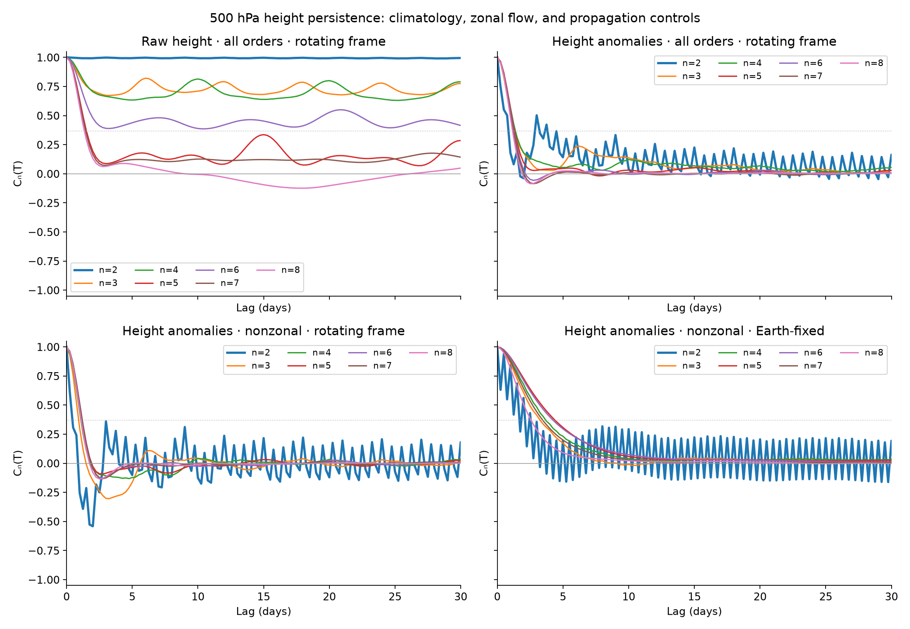
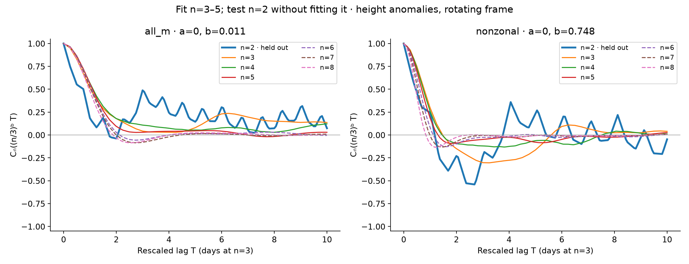
A repeating time-of-day signal changes the tail
Rapid oscillations prompted an explicitly post-inspection sensitivity: remove month-dependent UTC-hour departures while preserving monthly means. Degree-2 excess becomes +0.0412 for all orders (95% interval +0.0187 to +0.0645), but stays negative for nonzonal orders (−0.0181; interval −0.0244 to −0.0117). Initial decay remains fast. The positive all-order tail is an exploratory result worth following up.
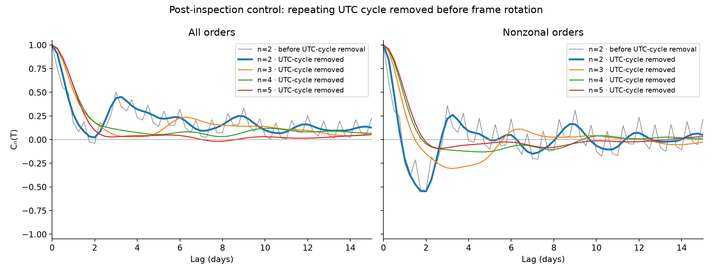
The excess also depends on the fitting window. Correlation persistence is not forecast skill. The prescribed rotation is exact for an ideal barotropic single-degree flow, not for observed atmospheric height. Bootstrap intervals do not include reanalysis systematics or multiple-comparison calibration.
Seasonal, field-definition and temporal-spectrum controls
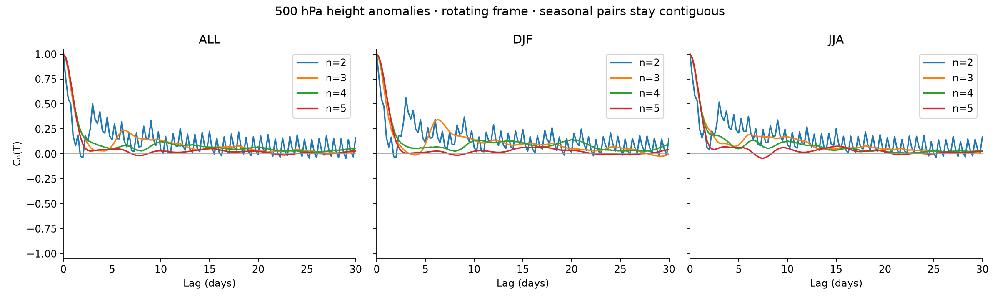
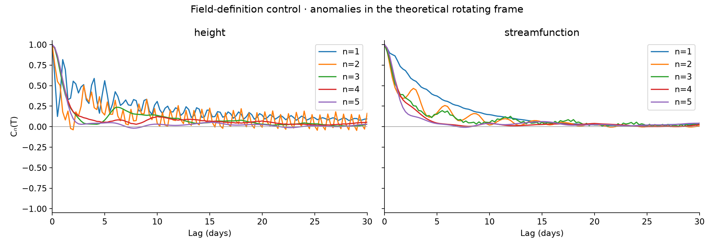
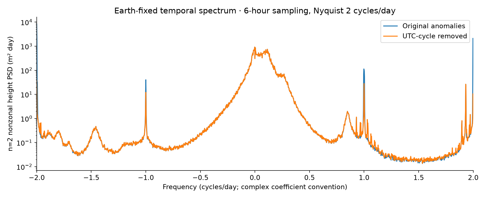
Numerical checks: five primary tests and one UTC-cycle test passed. The separate 1979 1° height check gives a degree-2 coefficient difference of 0.0128% and maximum absolute correlation difference of 0.0000528. It does not overturn the earlier vorticity-resolution finding.
Findings & interpretationRevised approachPrimary reportNumerical correlationsFits & controlsUTC sensitivity
Madden’s planetary-wave targets
Five spherical-harmonic targets, two pressure levels, and separate winter and summer spectra. This is an ERA5 comparison with Madden (2007), whose NCEP/NCAR record and EOF-based analysis differed. Select a level and season to inspect the temporal spectra.
300 hPa · All seasons
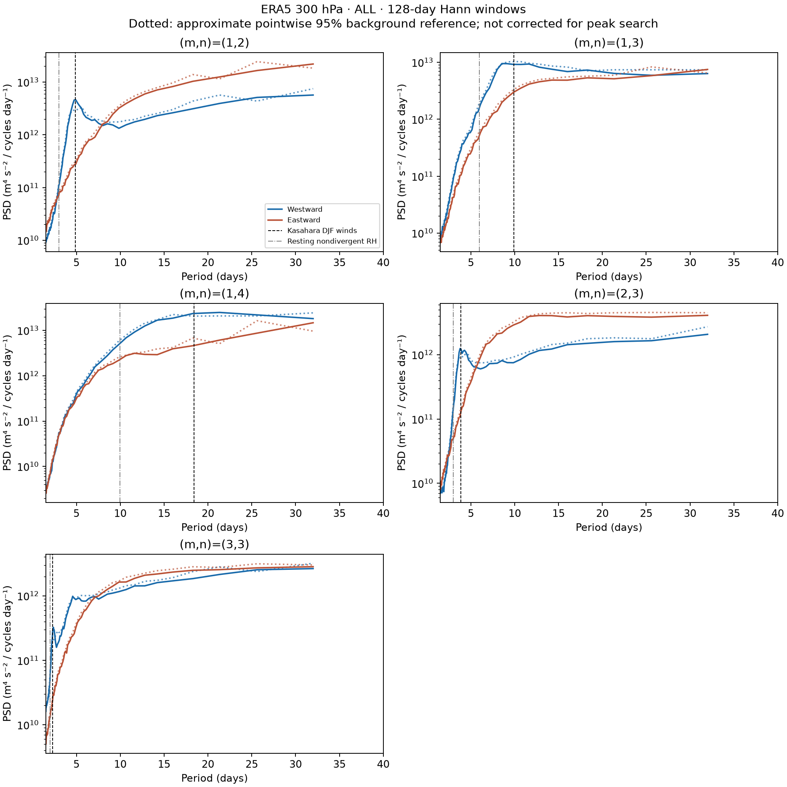
Clearer 5- and 4-day features; a weak 10-day target
In the primary 300 hPa all-season analysis, the westward target-band maxima are near 4.923 and 3.765 days for the 5- and 4-day targets. The 10-day target does not exceed the chosen background reference. Peak selection within a target band is not an independent wave identification.
| Target (m,n) | Expected period | Target-band peak | Peak / background | Above reference? |
|---|---|---|---|---|
| (1,2) | 5 days | 4.923 days | 1.691 | Yes |
| (1,3) | 10 days | 9.143 days | 1.031 | No |
| (1,4) | 16 days | 18.286 days | 1.265 | Yes |
| (2,3) | 4 days | 3.765 days | 1.532 | Yes |
| (3,3) | 2 days | 2.169 days | 1.152 | Yes |
The running-median background and approximate χ² bounds are exploratory pointwise references. Background uncertainty, correlated frequency bins, and the search across periods are not calibrated. EOF-pair interpretation and identification against Hough structures remain scientific review tasks.
Open any of the six temporal-spectrum figures
300 hPa · all300 hPa · DJF300 hPa · JJA500 hPa · all500 hPa · DJF500 hPa · JJA


Full Madden comparison · Numerical peak and seasonal results
Kinetic energy across spherical-harmonic degree
Rotational, divergent, and total kinetic energy are summed over all orders at each degree n. Energy is averaged after the transform. The lower panels compare all-season, northern-winter, and northern-summer spectra.
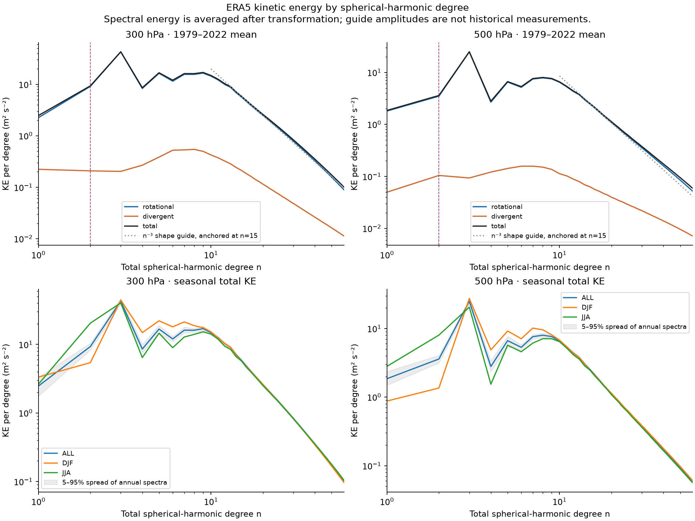
The fitted range matters
The 300 hPa all-season total-KE slope is −2.589 over n=10–20 and −2.852 over n=13–40. At 500 hPa, the corresponding slopes are −2.590 and −2.729.
Resolved synoptic scales
With n≤59, the shortest nominal wavelength is about 678 km. This grid does not resolve the aircraft mesoscale −5/3 range below roughly 300–400 km.
Year-bootstrap intervals describe year-to-year sampling variability. Reanalysis, resolution, and spectral-model uncertainty are additional. A −3 slope alone does not establish an enstrophy cascade.
Comparison with historical spectra
The closest sampling comparison uses July 1993–1997 at 00/12 UTC and an approximate 92–353 hPa layer, following the UKMO benchmark in Koshyk & Hamilton (2001). ERA5’s total vector-KE slope over n=10–20 is −2.836, compared with the published approximate −3 behavior.
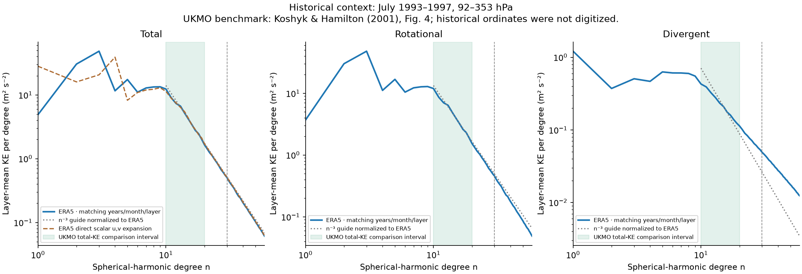
| Historical benchmark | What is compared | Important distinction |
|---|---|---|
| Boer & Shepherd (1983) | Stationary, seasonally sensitive low degrees versus transient higher degrees | Qualitative FGGE comparison; different sampling |
| Nastrom & Gage (1985) | Large-scale steepening toward −3 | Aircraft along-track spectra; mesoscale range unresolved here |
| Koshyk & Hamilton (2001), Fig. 4 | UKMO July 1993–1997, 92–353 hPa, approximately −3 over n=10–20 | Matched months and years; approximate pressure layer |
Full spectral-content and historical report · Matched ERA5 layer (NetCDF)
The n=2 component in context
At 300 hPa, the all-season vector spectrum gives E₁=2.471, E₂=9.317, and E₃=42.840 m² s⁻². Degree 2 lies below degree 3, but is not a local minimum relative to both neighboring degrees.
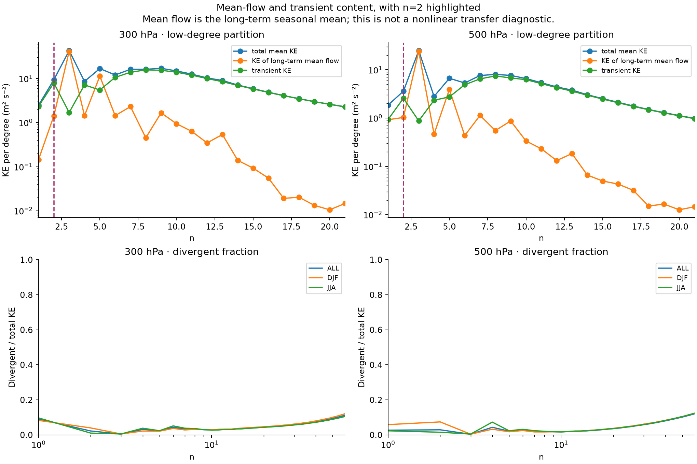
Seasonal mean circulation
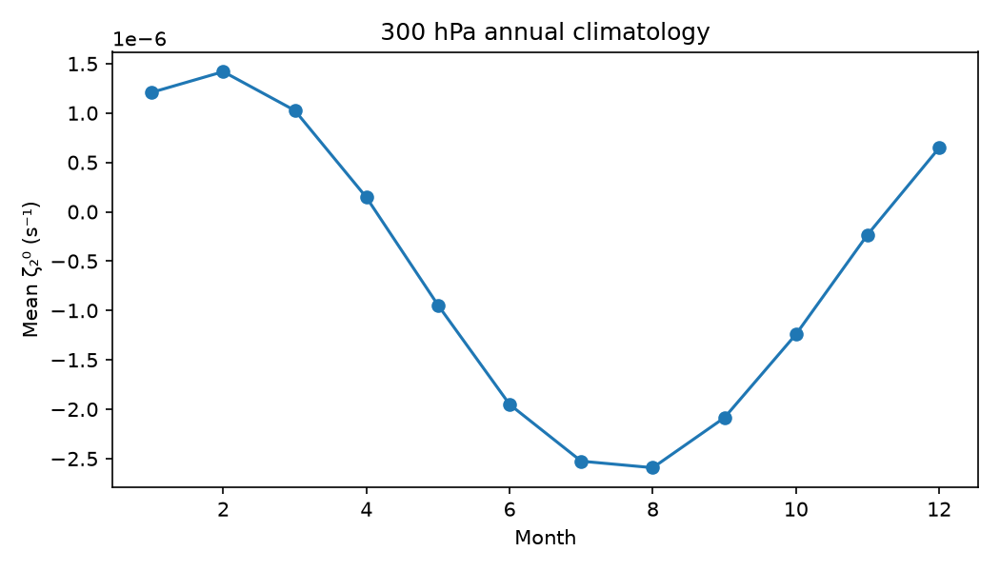
Numerical checks and interpretation limits
| Check | Result |
|---|---|
| Synthetic transform, energy, wave-sign, and seasonal checks | 6 passed |
| Real-data spectral energy closure | Largest relative error 9.05 × 10⁻¹⁶ |
| Whole-field coefficient difference, 1.5° versus 1° | 0.380–0.527% |
| Every sampled target coefficient differs by less than 1% | Failed; maximum 7.91% on a weak mode |
| Full 1979 target-mode westward PSD sensitivity | Approximately 0.09–0.40% |
The small full-year PSD differences do not establish full-record convergence or reverse the failed strict criterion. Energy closure checks the spectral representation and reconstructed winds; it does not equate truncated reconstructed energy with the raw ERA5 wind energy.
This is a partial comparison with Madden, not a certified replication. Hough-mode identification and EOF-pair interpretation remain open. Pattern-speed, nonlinear-transfer, and forecast experiments have not been run.
Setup and validation report · Coefficient-resolution audit · Full-year sensitivity
Data and provenance
The source code, Unity job scripts, figures, numerical summaries, and frozen environment are retained in the project repository. The initial release includes the extracted datasets and file-integrity checksums.
- Download the atmospheric-memory data206 MB · 44 years of height coefficients, fine-grid check and annual lag products · SHA256 checksum · Unity run records
- Download the 44-year coefficient archive299 MB · All annual coefficient datasets, 1979–2022 · SHA256 checksum
- Download energy and validation data63 MB · Divergent energy, historical sample, fine-grid sensitivity, and pilot data · SHA256 checksum
RepositoryInitial releaseAnalysis sourceUnity jobsMethodsEnvironmentSource hashesJob accounting
Data source: WeatherBench 2 ERA5. Wave benchmark: Madden (2007). Historical references are linked above. The supplied plan is preserved as reference material.